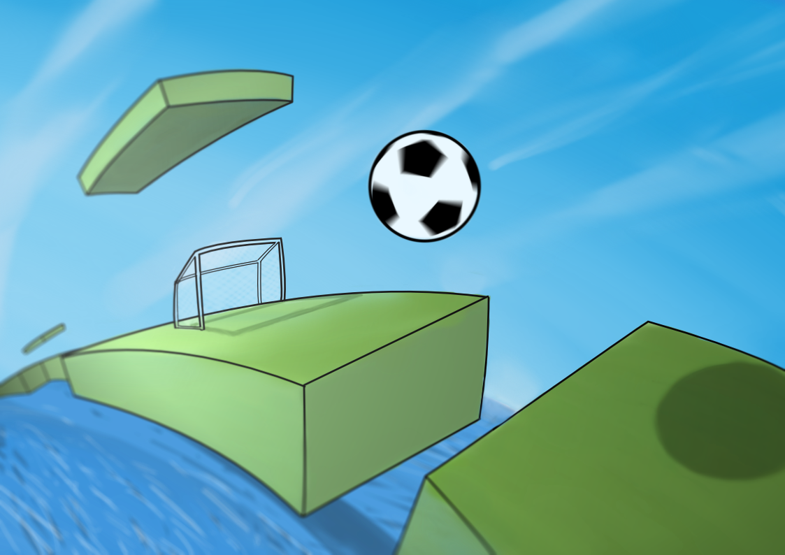

Roady Ball is an original work imagined and developed by Poly SOK in 2015.
Hosted on GitHub Pages — Theme by orderedlist
Roady Ball is inspired by an 80s PC game whose name I can’t remember! Although the graphics are certainly very different from the original, the principle of the game should be the same: jump a ball and avoid the traps so you don’t fall into the void!
